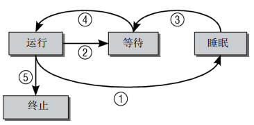

进程管理及调度：
- 调度器：内核子系统，负责：
- 决定为各个进程分配多长时间，何时切换到下一个进程
- 在内核从进程A切换到进程B时必须确保进程B的执行环境与上一次撤销其处理其资源时完全相同，这项工作与处理器极度相关，需要汇编实现
- 进程生命周期：
- 进程有以下几种状态：
- 运行：该进程正在执行
- 等待：进程能够运行但没有得到许可，因为CPU分配给另一个进程，调度器可以在下一次切换时选择该进程
- 睡眠：进程正在睡眠无法执行，因为它在等待一个外部事件，调度器无法在下一个任务切换时选择该进程
- 系统将所有进程保存在一个进程表中，无论其状态时运行，睡眠或等待。无法从睡眠直接进入运行状态，在所等待的时间发生后进程先变成等待状态，然后重新回到正常循环
- 僵尸进程：
- 什么是僵尸进程：这些进程的资源（内存，与外设的连接等）已经释放，因此它们无法再运行，但进程表中仍然有对应的表项
- 如何产生：原因在于unix系统下进程的创建和销毁。在两种事件发生时程序将停止运行：由另一个进程或用户杀死；进程的父进程在子进程终止时调用wait4系统调用，这相当于向内核证实父进程已经确认了子进程的终结，该系统调用使得内核可以释放为子进程保留的资源，只有当第一个条件发生而第二个条件不成立的情况下才会出现。在进程终止后，其数据尚未从进程表删除之前，进程总是暂时处于僵尸状态
- 从进程工具ps，top可以看到僵尸进程，因为残余的数据在内核中占据的空间极少，所以几乎不是问题
- linux进程管理的结构中还需要另外两种进程状态选项：用户状态和核心状态

- 进程类型：新进程是通过fork和exec系统调用产生的
- fork生成当前进程的一个相同副本，该副本称之为子进程。原进程的所有资源都以适当的方式复制到子进程，因此该系统调用之后原来的进程就有了两个独立的实例。这两个实例的联系包括：同一组打开的文件，同样的工作目录，内存中同样的数据（两个进程各有一份副本）
- exec从一个可执行的二进制文件加载另一个应用程序，来代替当前运行的程序。因为exec并不创建程序，所以必须首先使用fork复制一个旧的程序，然后调用exec在系统上创建另一个应用程序
- clone
- 命名空间
- 新的命名空间可以使用下面两种方式创建：
- 在用fork或clone系统调用创建新进程时，有特定的选项可以控制是与父进程共享命名空间还是建立新的命名空间
- unshare系统调用将进程的某些部分从父进程分离，其中包括命名空间
进程环境：
有8种方式使进程终止：
- 正常终止：
- 从main返回，执行return语句，等效于exit
- 调用exit，此函数由ISO C定义，其操作包括调用各种终止处理程序，关闭所有标准IO流；
- 调用_exit或_Exit——？
- 最后一个线程从其启动例程中执行return返回（和从main中返回有什么区别？）但是该线程的返回值不用做进程的返回值。当最后一个线程从其启动例程返回时该进程以终止状态0返回
- 从最后一个线程调用pthread_exit，进程终止状态为0——？
- 异常终止：
- 调用abort，产生SIGABRT信号
- 接收到一个信号。信号可由进程自身（如调用abort函数），其他进程或内核产生
- 最后一个线程对取消请求做出响应——？默认情况下，取消以延迟方式发生：一个线程要求取消另一个线程，若干时间后目标线程终止
- 不管进程如何终止，最后都会执行内核中的同一段代码，这段代码为相应的进程关闭所有打开的描述符，释放它所使用的存储等
- 子进程通知父进程如何终止，父进程通过wait或waitpid函数取得其终止状态：
- 对3个终止函数(exit, _exit, _Exit)，将其状态作为参数传送给函数
- 异常终止的情况下，内核产生一个异常终止原因的终止状态
- 环境变量表：每个进程都能接收到环境变量表
#include<stdlib.h> char *getenv(const char*name)
- 存储空间布局：
- 正文段
- 初始化数据段
- 未初始化数据段
- 栈
- 堆
- 函数setjmp和longjmp
- 函数getrlimit和setrlimit
启动及终止的各种方式：

内核执行进程的唯一方法是调用exec函数，进程自愿终止的唯一方法是显式或隐式的调用_exit或_Exit，进程也可非自愿地由一个信号使其终止
进程控制：
- pid_d fork(void )：#include<unistd.h> 复制当前进程，新进程几乎与原进程一样，执行的代码也完全相同，但新进程有自己的数据空间，环境和文件描述符；调用一次返回两次，在父进程中fork返回子进程的ID，在子进程中fork返回0；fork之后父进程先执行还是子进程先执行是不确定的，取决于内核使用的调度算法
- fork的一个特性是父进程的所有打开文件描述符都被复制到子进程中
- fork有两种用法：
- 一是父进程希望复制自己，使父进程和子进程同时执行不同的代码段，这在网络服务进程中很常见
- 一个进程要执行另一个不同的程序，这种情况下子进程从fork返回后立即调用exec
- 对于父进程已经终止的所有进程，父进程都改变为init进程
- wait和waitpid：当一个进程正常或异常终止时内核就向其父进程发送SIGCHLD信号，调用wait或waitpid会发生什么？
- 如果其所有子进程都还在运行则阻塞
- 如果一个子进程已终止，正等待父进程获取其终止状态，则取得该子进程的终止状态立即返回
- 如果没有任何子进程，则立即出错返回
查看进程的终止状态：
定义在#include<sys/wait.h>中有四个互斥宏可用来取得进程终止的原因，名字以WIF开始
- WIFEXITED(status)：如果子进程正常结束，返回一个非0值；对这种情况可执行WEXITSTATUS(status)获取子进程传送给eixt或_exit参数的低8位
- WIFSIGNALED(status)：如果子进程因为一个未捕获的信号而终止，就取一个非0值，对这种情况使用WTERMSIG，它返回一个信号代码
- WIFSTOPPED(status)：如果子进程意外终止则返回一个非0值，对于这种情况可执行WSTOPSIG，获取使子进程暂停的信号编号
- WIFCONTINUED
信号：#include<signal.h>
- 当某个信号出现时，可以告诉内核按下列三种方式进行处理：
- 忽略此信号：大多数信号可使用这种方式进行处理，但有两种信号不能忽略：SIGKILL和SIGSTOP，原因是，它们向内核和超级用户提供了使进程终止或停止的可靠方法
- 捕捉信号：为了做到这一点要通知内核在某种信号发生时调用一个用户函数，在用户函数中执行对该信号的处理；不能捕捉SIGKILL和SIGSTOP
- 执行系统默认动作：大多数系统默认状态是终止进程
- 查看信号：kill -l


- 函数：#include<signal.h>
- void (*signal(int signo, void(*func)(int)))(int)：说明：参数 signo：信号名；func的值为SIG_IGN或SIG_DEL或当接到此信号后要调用的函数地址。如果指定SIG_IGN表示内核忽略此信号，如果指定SIG_DFL表示接到此信号后的动作是系统默认动作，当指定函数地址时则此信号发生时调用该函数，称此函数为信号处理函数
- int kill(pid_t pid, int signo)/int raise(int signo)：kill将信号发送给进程或进程组，raise允许进程向自己发送信号；调用raise(signo)相当于kill(getpid(), signo)
- unsigned int alarm(unsigned int seconds)：#include<unistd.h>，设置一个定时器，在将来某个时刻超时，产生SIGALRM，如果忽略或不捕获则默认终止调用，参数seconds是产生信号SIGALRM需要经过的时钟秒数，当这一时刻到达时，信号又内核产生，由于进程调度的延迟，所以进程得到控制从而能够处理该信号还需要一个时间间隔。每个进程只能有一个闹钟时间
- int pause(void)：#include<unistd.h>，使调用进程挂起直到捕捉到一个信号，返回值：只有执行了一个信号处理并从其返回时，pause才返回，这种情况下返回-1，errno设置为EINTR
- void abort(void)：#include<stdlib.h>：此函数将SIGABRT信号发送给调用进程，其方法是调用raise(SIGABRT)
- 信号集：表示多个信号
1 system：启动新进程
- ISO C定义了system函数，但是对操作系统的依赖性很强
#include<stdlib.h>
int system(const char *cmdstring);
- system的返回值：system在实现中调用了fork，exec，waitpid，因此有3种返回值：
- fork失败或者waitpid返回除EINTER之外的错误，则system返回-1，并且设置error以指示错误
- 如果exec失败（表示不能执行shell），其返回值如同执行了exit(127)
- 否则三个函数都成功，system的返回值是shell的终止状态
通过库函数（#include<stdlib.h>）:int system(const char *string)完成，这个函数启动shell来启动一个进程，相当于sh -c string;
一般来说，使用system函数远非启动其他进程的理想手段，因为它必须用一个shell来启动需要的程序；由于在启动之前需要先启动一个shell，对shell的依赖比较大
2.替换进程镜像：exec系列函数，将当前进程替换为一个新进程，在新进程启动后，原来的程序不再运行，所以效率比system高
3.复制进程映像：
- pid_d fork(void )：复制当前进程，新进程几乎与原进程一样，执行的代码也完全相同，但新进程有自己的数据空间，环境和文件描述符；在父进程中fork返回子进程的ID，在子进程中fork返回0
- 等待一个进程：在父进程中调用wait函数让父进程等待子进程的结束,这个调用返回子进程的PID，他通常是已经结束运行的子进程的ID，状态信息允许父进程了解子进程的退出状态
- #include<sys/types.h>, #include<sys/wait.h> pid_t wait(int* stat_loc)
- 可以用sya/wait.h文件中的宏来解释状态信息：
- WIFEXITED(stat_val)：如果子进程正常结束，它就取一个非零值
- WEXITSTATUS（stat_val）：如果WIFEXITED非零，它返回子进程的退出码
- WIFSIGNALED（stat_val）：
- WTERMSIG（stat_val）:
- WIFSTOPED(stat_val):
- WSTOPSIG(stat_val):
- 必须清楚，子进程终止时它与父进程之间的关联还会保持，直到父进程也正常终止或调用wait函数才结束，因此进程表中代表子进程的表项不会立刻释放；这时他将成为一个死进程或僵尸进程
- 还有另一个系统调用可用来等待子进程的结束，
- #include<sys/types.h>, #include<sys/wait.h>, pid_t waitpid(pid_t pid, int* stat_loc, int options)
进程间通信：只能在同一台机器的进程才能使用
进程间通信：
一、管道
管道，通常指无名管道，是 UNIX 系统IPC最古老的形式。
1、特点：
- 它是半双工的（即数据只能在一个方向上流动），具有固定的读端和写端。
- 它只能用于具有亲缘关系的进程之间的通信（也是父子进程或者兄弟进程之间）。
它可以看成是一种特殊的文件，对于它的读写也可以使用普通的read、write 等函数。但是它不是普通的文件，并不属于其他任何文件系统，并且只存在于内存中。
2、函数：
- int pipe(int fd[2])：#include<unistd.h>
- 参数fd返回两个文件描述符，fd[0]为读而打开，fd[1]为写而打开。fd[1]的输出是fd[0]的输入
- int pclose(FILE* stream_to_close)：用pclose关闭与之关联的文件流，只在popen启动的进程结束后才返回，如果调用pclose时仍旧在运行，pclose调用将等待该进程的结束
- 参数：
- command：要运行的程序名和相应的参数
- open_mode："r"或"w",不支持其他选项，所以不能同时对他进行读写操作
- 注意：
- 要实现双向通信，最普通的方法是使用两个管道，每个管道负责一个方向的数据流
- 2. FILLE *popen(const char* command, const char* open_mode):允许一个程序将另一个程序作为进程来启动，并可以传递数据给它或通过它接收数据
pipe调用
二、FIFO
FIFO，也称为命名管道，它是一种文件类型。
1、特点
FIFO可以在无关的进程之间交换数据，与无名管道不同。
FIFO有路径名与之相关联，它以一种特殊设备文件形式存在于文件系统中。
信号量（semaphore）与已经介绍过的 IPC 结构不同，它是一个计数器。信号量用于实现进程间的互斥与同步，而不是用于存储进程间通信数据。
1、特点
信号量用于进程间同步，若要在进程间传递数据需要结合共享内存。
信号量基于操作系统的 PV 操作，程序对信号量的操作都是原子操作。
每次对信号量的 PV 操作不仅限于对信号量值加 1 或减 1，而且可以加减任意正整数。
支持信号量组。
- 函数：#include<sys/semh>
- int semctl(int sem_id, int sem_num, int command, ...):用来直接控制信号量信息
- 参数：
- sem_num:当需要用到成组的信号量时用到这个参数，一般为0，表示这个唯一一个
- command：将要执行的动作：
- SETVAL：初始化信号量，在设置信号量之前必须这么做
- int semget(key_t key, int num_sems, int sem_flags)：创建一个新信号量或取得一个已有信号量的键，所有其他信号量函数都是使用由semget函数返回的信号量标识符
- 参数：
- key:
- num_sems: 指定需要的信号量数目，几乎总是取值为1
- sem_flags: 是一组标志,低端的9个bit是该信号量的权限，
- int semop(int sem_id, struct sembuf* sem_pos, size_t num_sem_ops)：改变信号量的值
- 参数：
- sem_pos:
共享内存：为进程创建的一个特殊的地址范围，放到一个进程的内存中，其他进程也可以，使用共享内存来提供对大块区域的访问；共享内存使用类似于信号量的函数
1.函数:
- int shmget（）：创建共享内存
- int shmat(int sem_id, const void * shm_addr, int shm_flag)：第一次创建的内存不会被任何进程共享，使用这个函数启用对该内存的共享
- 参数：
- sem_id:
- shm_addr: 表示连接到当前地址，通常为空，表示由系统选择共享内存的地址
- shm_flag:
- 返回值：调用成功返回共享内存的第一个字节的指针，失败则返回-1
- int shmdt(const void* shm_addr): 参数为shmat的返回值，将共享内存从当前进程中分离，成功返回0，否则返回-1；
- int shmctl(int sem_id, )
消息队列：是消息的链接表，存放在内核中。一个消息队列由一个标识符（即队列ID）来标识。
1、特点
消息队列是面向记录的，其中的消息具有特定的格式以及特定的优先级。
消息队列独立于发送与接收进程。进程终止时，消息队列及其内容并不会被删除。
消息队列可以实现消息的随机查询,消息不一定要以先进先出的次序读取,也可以按消息的类型读取。
1.函数 #include<sys/msg.h>
- int msgget(key_t key, int msgflg):创建和访问一个消息队列
- int msgsnd(int msgid, const void* msg_ptr, size_t msg_sz, int msgflg)：用来把消息添加到消息队列中
- int msgctl(int msgid)
- int msgrcv(int msgid, void *msg_ptr, size_t msg_sz, long int msgtype, int msgflg): 从一个消息队列中获取消息
- int msgctl（int msgid, int command, struct msqid_ds * buf）